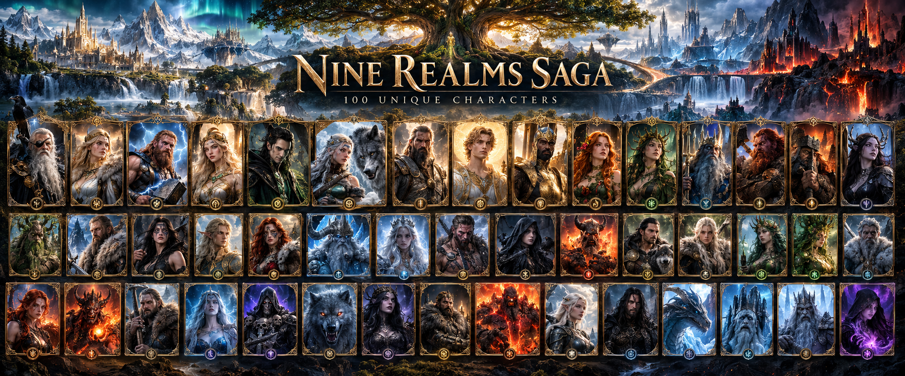

Gods • Goddesses • Heroes • Creatures • Magic
THE CHARACTERS OF NINE REALMS
Every soul has a story. Discover the powers, rivalries, prophecies and hidden histories behind the figures who shape the Nine Realms.
EVERY CHARACTER IS PART OF THE NFT COLLECTIBLE UNIVERSEMEET THE LEGENDS
Select any framed portrait to open their story.
Every character introduced in Nine Realms Saga is part of the NFT collectible collection. Character portraits, lore and future collectibles will grow together as the saga expands. NFT ownership and any associated rights or benefits will be defined separately in the official collection terms.